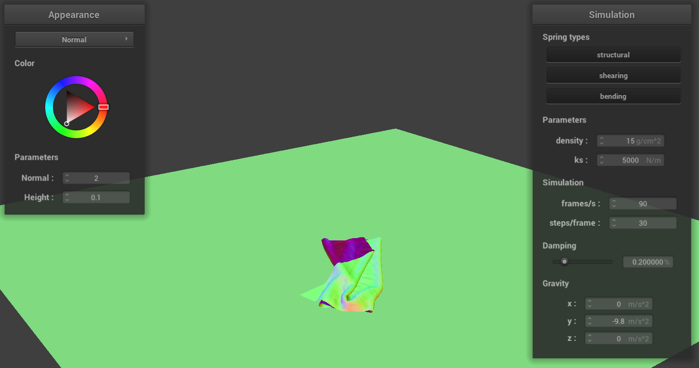
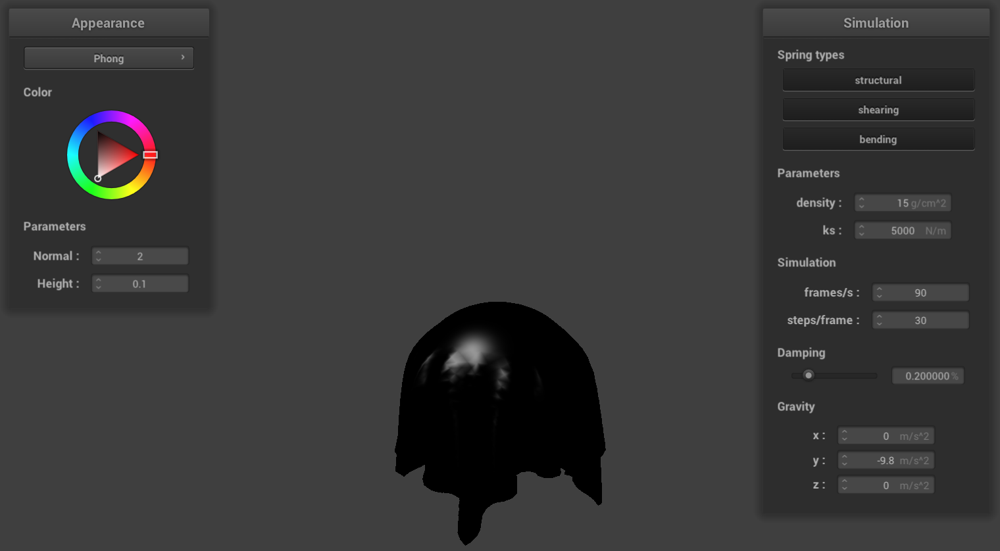
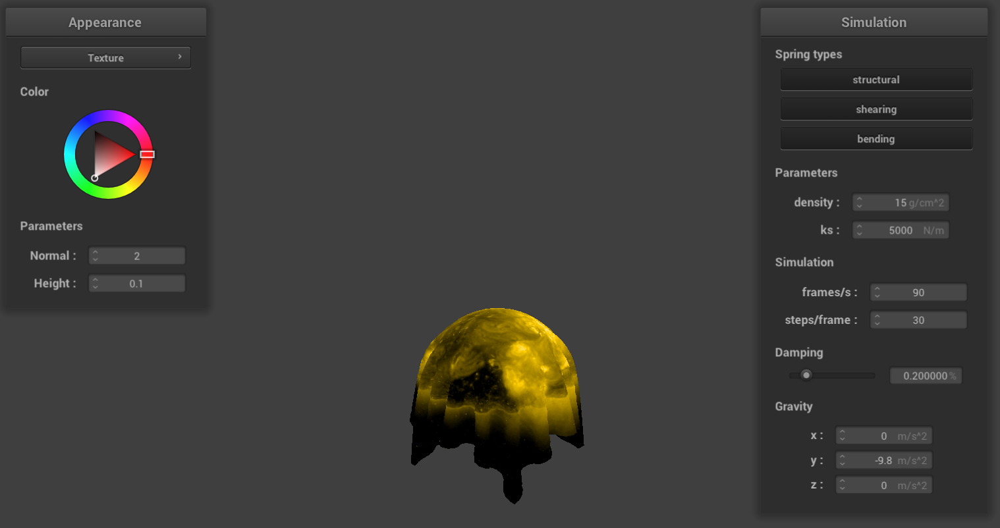

In this project, we simulated a cloth in realtime using a mass and spring based system. First, we created the cloth through discrete point masses and spring constraints. Then, we calculated the forces on the point masses and their new positions for each time frame to simulate movement. Next, we implemented collisions through detection of a collision of a cloth with a sphere or a plane and applying an opposing force to the cloth. We also implemented self-collision through using a hashed spatial map to efficiently calculate whether nearby point masses are colliding. Lastly, we implemented different kinds of shading using GLSL.
Part 1
For this part, we simply had to initialize the point masses and the springs, which was rather straightforward. We first create the grid of point masses, setting their position according to the orientation of the cloth. We then iterate through the pinned vector to pin the corresponding point masses. Next, we just iterate through every point mass on the grid, we check to see whether it is appropriate to create each kind of spring.
No shearing constraints
Only shearing constraints
All constraints
Part 2
This is pinned4.json with default parameters in its final resting state.
Spring Constant Comparison
ks = 100
ks = 10000
With a high ks, the cloth seems to be held together much more firmly, while with a low ks the cloth seems rather loose. While they both still follow roughly the same motion as they fall, the low ks seems much more bouncy and loses its shape quickly, while the high ks manages to mostly maintain its shape.
Density Comparison
density = 3
density = 100
Visually, changing density is very similar to changing ks, as a high density makes the cloth droop more, while a low density makes the cloth look not as strained. The falling still follows pretty much the same motion, but with high density you can tell clearly how the middle portion of the cloth bounces a few times before coming to its final resting state, while for low density it doesn't really bounce.
Damping Comparison
damping = 0%
damping = 90%
These two pictures show the cloth in motion. Changing the damping greatly changes the speed at which the cloth moves. With low damping, the cloth falls quicker and faster, the movements seem much more jittery, and the cloth deforms. For example, the image showing low damping captures the moment when the cloth swings all the way to the other side from the initial position and swings back again. With high damping, the cloth falls slowly and maintains its shape well, as shown in the picture.
Part 3
Cloth 500ksCloth 5000ksCloth 50000ks
Part 4

Final Resting State
High spring constant
High density
Even higher spring constant
As seen above, high spring constant acts as a flatting force, and at very high values almost returns the cloth to a perfectly flat state. High density on the other hand means each particle of the cloth is influenced very little by its neigbooring points, causing a more bumpy final position.
Part 5
Vertex shaders work by the changing the actual position of vertices in screen space for the final render. This means that while in code objects will retain their original shape, in the render they will look stretched or distorted as per the shader operation. Fragment shaders cannot move vertices, instead relying on normal values and light sources to affect the color of parts of the triangle.
Blinn Phong shading tries to accurately simulate the material given the specular and diffuse coefficients of the material, as well as the ambient light. It computes the reflection across the normal for specular and across the h vector for diffuse, adding a constant term for ambience.
Ambient light only
Diffuse reflections only
Specular reflections only
Phong Shading

Here are screenshots of our texture shader using a custom planet texture.

Here are our examples of bump and displacement mapping. Using higher poly meshes seems to create noticable noise in the case of bump shading, but for displacement shading the difference is less noticeable.
Standard bump mapping
Standard displacement mapping
Bump mapping with low poly mesh
Displacement mapping with low poly mesh
Bump mapping with high poly mesh
Displacement mapping with high poly mesh
Also for fun, here is a displacement shading usinng the planet from earlier as the texture.
Planet displacement map
Examples of our mirror shader.
Mirror on the initial flat cloth
Mirror cloth having fallen on the sphere
We experimented a little bit with custom shaders this project, doing some similar to cel shading, made by limiting the color spectrum and coloring near horizontal edges black to create an outline. We also made one which turns the render blocky by floor dividing positions to fixed multiples. Here are a few cool examples.
Pseudo-cel-shading applied to normal coloring
Shader blockifying the mirror texture into a few cubic regions